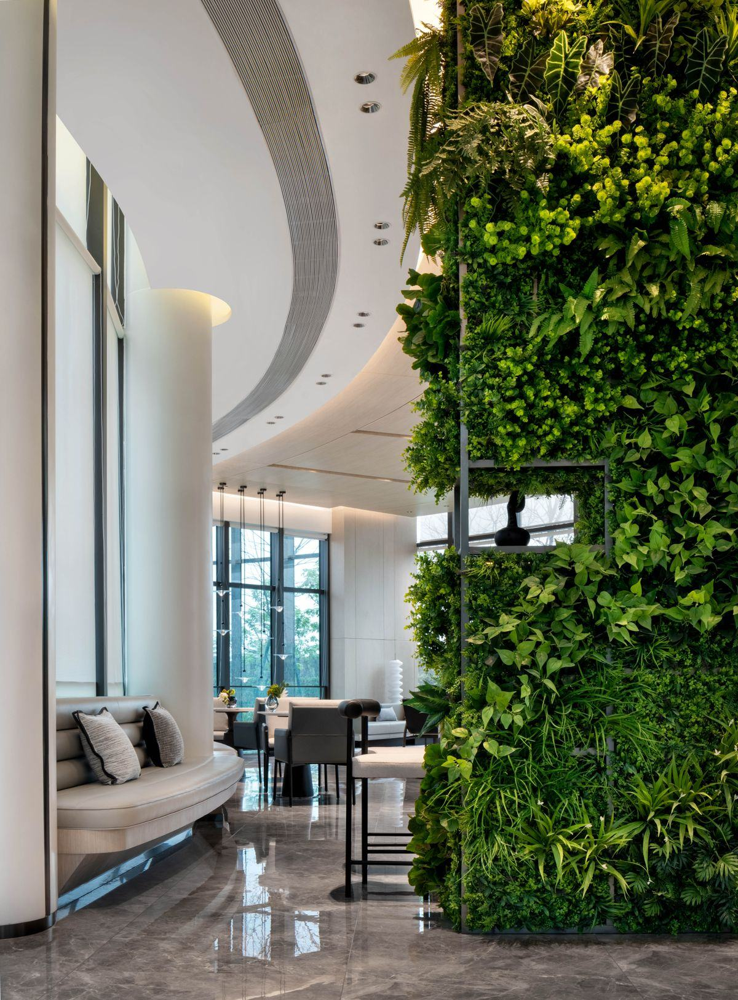

Un mur végétal à Lille et dans toute la métropole lilloise, pour bureaux, commerces, restaurants et hôtels. Verdalys vous met gratuitement en relation avec un installateur partenaire qui intervient dans le Nord : rappel sous 24 h ouvrées.
Par Sébastien Monnier, fondateur de Verdalys · Mis à jour le

Lille concentre sièges régionaux, PME dynamiques et un cœur de ville commerçant très fréquenté. Le mur végétal y répond à deux attentes : soigner l'image d'un lieu professionnel et apporter de la nature dans un climat souvent gris. Encore faut-il choisir la bonne technologie selon l'emplacement.
Le quartier d'affaires Euralille aligne tours, halls d'accueil et open spaces. Un mur végétal y habille une banque d'accueil, une salle de réunion ou une cage d'ascenseur, et renforce l'image d'un siège régional. En intérieur sans arrosage, le mur végétal pour bureaux est un classique.
Les boutiques du Vieux-Lille, les commerces de la rue de Béthune et les restaurants du centre cherchent une vitrine mémorable. Un panneau végétal derrière un comptoir ou en devanture crée un repère photographié et partagé, sans plomberie ni entretien lourd.
La métropole compte de nombreuses PME et sièges régionaux, de Villeneuve-d'Ascq à Roubaix. Salles de pause, cafétérias et espaces de coworking s'équipent de murs végétaux pour le confort visuel et le volet acoustique. Voir notre page acoustique & bien-être.
Le climat de Lille — hivers gris, faible ensoleillement, humidité et gel — pèse directement sur le choix du mur végétal. La règle est simple : ce qui vaut en intérieur ne vaut pas en extérieur.
Dans un hall ou une salle borgne, le manque de lumière naturelle lillois n'est plus un problème : le mur végétal stabilisé ne demande ni éclairage horticole, ni arrosage. C'est le choix le plus sûr pour un bureau ou un commerce du centre, avec une durée de vie de 8 à 10 ans.
Un atrium ou une baie bien exposée permet d'installer un mur végétal naturel vivant avec arrosage automatique. Il purifie l'air et évolue au fil des saisons, en échange d'un contrat d'entretien régulier — à réserver aux emplacements réellement éclairés.
Sur une façade ou une terrasse dans le Nord, le gel hivernal et les pluies fréquentes excluent le stabilisé. Il faut un système naturel bâti sur des plantes rustiques, ou un feuillage artificiel traité anti-UV et résistant au froid pour un rendu stable toute l'année.
Pour une devanture, une cour ou une terrasse de restaurant exposée, le mur végétal artificiel traité anti-UV ne craint ni gel ni humidité et ne demande aucun entretien. C'est souvent le meilleur compromis en extérieur sous le climat lillois.
Quelle que soit la pièce ou la contrainte, il existe une technologie adaptée. Les installateurs partenaires du réseau posent l'ensemble de ces solutions sur la métropole lilloise.
La base de la plupart des projets lillois, en accueil, bureau ou boutique.
Découvrir →Vrais végétaux, zéro arrosage et zéro lumière : parfait pour les pièces sombres.
Découvrir →Traité anti-UV, sans entretien, adapté à l'extérieur et aux vitrines.
Découvrir →Prolonger le végétal au plafond d'un restaurant ou d'un hall d'accueil.
Découvrir →Une pièce forte pour un atrium, un lobby d'hôtel ou un grand espace d'accueil.
Découvrir →Comparer les fourchettes de prix de chaque technologie avant de vous lancer.
Voir les prix →Ces fourchettes de référence s'appliquent sur la métropole lilloise. Le prix final dépend de la technologie, de la surface et des contraintes de pose ; le devis de l'installateur est gratuit.
| Type de mur végétal | Usage typique à Lille | Prix indicatif HT posé |
|---|---|---|
| Mur artificiel traité anti-UV | Vitrine, terrasse, cour | 150 – 400 €/m² |
| Mur stabilisé | Hall, bureau, boutique intérieure | 400 – 900 €/m² |
| Mur naturel vivant, hors irrigation | Atrium, espace éclairé | 600 – 1 200 €/m² |
| Projet type 6 m² en accueil | Fourniture, cadre et pose | 2 400 – 5 400 € |
| Entretien mur naturel | Contrat annuel | 80 – 200 €/m²/an |
| Entretien mur stabilisé | Dépoussiérage occasionnel | Négligeable |
La mise en relation est gratuite et sans engagement. Vous décrivez votre projet, un seul installateur partenaire vous recontacte, vous décidez ensuite librement.
Indiquez le lieu à Lille ou dans la MEL, la surface approximative, l'emplacement (intérieur ou extérieur) et le délai souhaité. Quelques informations suffisent pour cadrer la demande.
Un installateur partenaire intervenant sur le Nord vous rappelle sous 24 h ouvrées. Il précise la technologie adaptée à votre lieu et à ses contraintes, puis établit un devis chiffré gratuit.
Après validation, l'installateur planifie la pose sur site, en horaires décalés si votre commerce ou vos bureaux restent ouverts. Vous n'avez qu'un seul interlocuteur du début à la fin.
Verdalys ne pose pas les murs directement : notre rôle est de qualifier votre demande et de la transmettre à un professionnel de confiance du réseau qui intervient dans le Nord. Vous ne recevez qu'un seul contact, et votre demande n'est jamais revendue à plusieurs prestataires.
Le réseau d'installateurs partenaires intervient sur l'ensemble de la métropole lilloise et du Nord (59). Voici les principaux secteurs couverts.
Centre, Vieux-Lille, Euralille, Wazemmes, Vauban-Esquermes, Moulins et Lille-Sud : bureaux, commerces, restaurants, hôtels et showrooms.
Roubaix, Tourcoing, Villeneuve-d'Ascq, Marcq-en-Barœul, Lambersart, Wattignies, Croix et les autres communes de la métropole.
Au-delà de la métropole, les installateurs partenaires se déplacent dans le reste du Nord selon la taille du projet. Précisez votre commune lors de la demande.
Décrivez votre projet : un installateur partenaire vous rappelle sous 24 h ouvrées avec un devis gratuit et sans engagement.
Demander mon devis gratuit